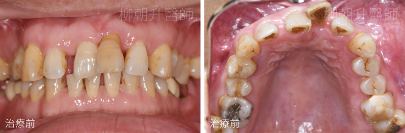
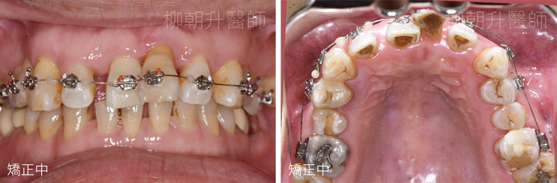
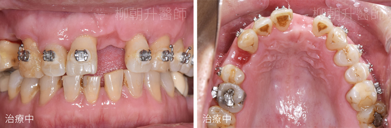
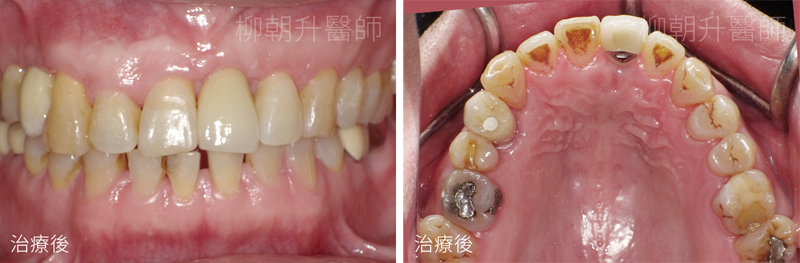
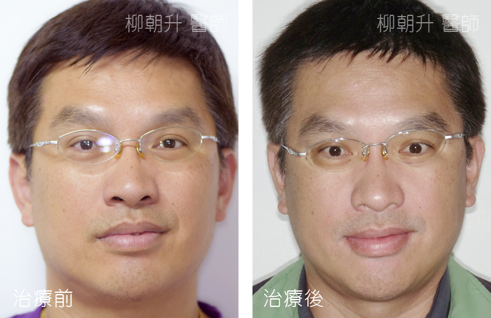
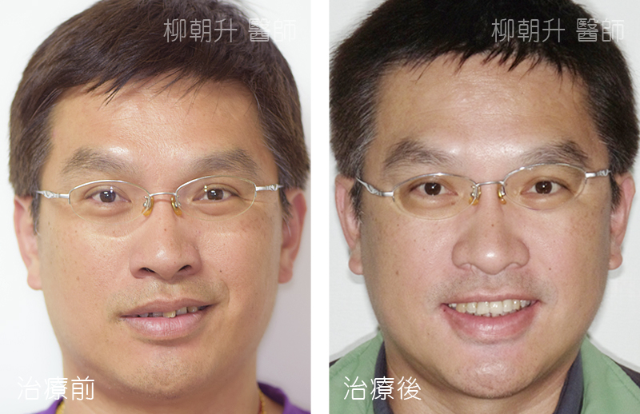
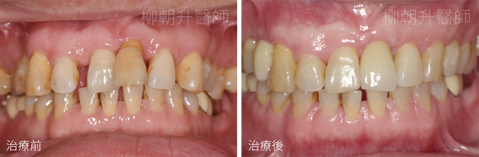
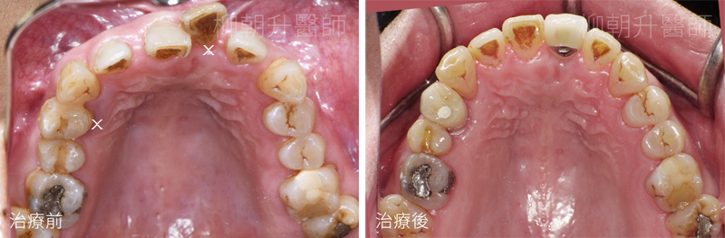

我是一個熱愛教育的工作者，每天都要面對許多師生，開口說話更是家常便飯，不過長期以來我飽受牙周病來給我的不便及困擾。

起初先是口中出現了異味，讓我無法自在的與他人談話，之後牙齦萎縮越來越嚴重，牙齒開始搖晃，變得又長又暴，完全失去自信，更別說是開懷大笑了。
除了牙齒外觀有著嚴重的變化外，還影響了飲食，因為牙齦萎縮導致牙根嚴重的外露，讓我的牙齒變得痠軟無力，有時連呼吸都會覺得敏感不舒服。
也因為非常擔心牙周病的問題，所以上網查了許多相關的資訊，不查還好，查了之後驚覺事態嚴重，一直以為牙周病只會有外觀上的影響、無法正常進食，居然還可能會引發心肌梗塞、糖尿病、肺部感染、腸胃病…等疾病，看了這些可能危害到自身健康問題，讓我不得不好好正視我的口腔問題。
就在陷入苦腦之時，遇見了在牙醫診所工作的學生家長，得知她們診所有專治牙周問題的專科醫生，可以藉由牙周病治療來改善我困擾許久的牙周問題，所以趕緊透過這位家長協助安排約診，展開了我一連串的口腔重建之路。
先是安排口腔外科專科-柳朝升醫師進行評估，柳醫師看診非常的親切又仔細，在做任何療程前都會向我說明每一個治療的步驟，像是X光片的解說、為何要用探針測量牙齦、測量時報的一串數字是什麼意思，測量後的數字，可以知道牙周病的嚴重程度，再依嚴重程度來安排後續的治療內容。
我測量後的結果落在嚴重程度，又因自身工作關係在牙周治療的部份捨棄了傳統的牙周術式，選用了新式的水光雷射治療，只需2次的療程，治療過程又不太會痛，真的快速解決了我的問題。
處理完了牙周病接著就是重頭戲登場，因為牙周病關係骨頭破壞嚴重掉2顆牙，拖了一段時間才處理，牙齒整個位移嚴重，柳醫師安排了矯正醫師來協助，利用矯正的方式將空間挪出，並將前牙位移的牙齒排列整齊。
經過陳旻佐醫師細心評估後，我只需要做局部的矯正，大約1年的時間，所以馬不停蹄的開始了矯正療程，年紀一大把了才開始矯正，其實還真的有點尷尬，每個人看到都會問一下，校長你戴矯正器吶！我也藉著自身的經驗來告訴小朋友，要好好保養自已的牙齒，才不會跟我一樣。矯正過程中沒有太大的不適，頂多就覺得口內有點異物感，但是人真的是很容易習慣的動物，很快的就習慣了口腔內有矯正器這件事，當然除了認真的醫師外，我也非常全力配合治療，很快的一年過去了，要植牙的空間在陳醫師細心的調整之下都就定位了，所以就能植牙囉。
在植牙前，必須先做一個附加手術，由於先前牙周病的關係，造成我植牙區的骨頭嚴重流失，柳醫師為了讓植入的植體更穩固，所以在植牙前需要先做補骨，術後需要等候約4-6個月的時間，確認齒槽骨生長到理想的高度及寬度後，才能讓往後要植入的植體能更穩固及耐用。
經過重重的療程關卡，我總算是來到植牙這天，一如往常的到診所掛號，但不一樣的是，我被引導至三樓的診間，映入眼簾的是樓梯間的『數位植牙中心』幾個大字，與半年前來施行補骨手術時完全不同，看診環境全部煥然一新。
我被帶領進入寬敞的候診室，有著舒適的沙發及大大的電視，整個空間讓人好放鬆；引導我到三樓的助理，原來是植牙中心的專屬秘書，先端上一杯茶，再遞上今天的療程同意書，並逐條的向我說明，聽完說明坐在這舒適的空間稍待片刻，等候手術開始。
進入手術室前，秘書一邊引導我到手術室一邊介紹著植牙中心的環境，植牙中心是採獨立式的看診空間，進入手術室前會先經過一般診療室，吸引我目光的是診療室外那片落地的大玻璃，秘書有特別提到這片琉璃是由竹山在地的藝術家『芳仕璐昂』所創作的，放在這裡一點都不奇怪，反而異常的搭。
進到手術室，空間寬敞明亮、擺設也跳脫了醫療給人冷冰冰的感覺，取而代之的是安心的舒適感；聽秘書說，手術室裡的診療椅是特別挑選過的，價值百萬、符合人體工學，光看真的不夠，趕緊躺上這張百萬診療椅，果真不同凡響，格外舒服，舒適的空間伴隨著優雅的音樂聲，真的完全讓自己忘了置身於醫療院所，好像是在SPA館一樣。
優美的環境、貼心的服務讓我原本忐忑不安的心悄悄的放下，柳醫師在手術開始前仔細的為我說明著稍後要施行的手術內容、需要花費的時間…等，整個過程中難免聽到機器滋滋作響的聲音，但柳醫師很細心，在進行每個步驟時向我說明，讓我很安心，所以整個手術過程就像只是張著嘴在休息般的自在。
術後，手術助理帶著我到候診區休息，休息過程中邊為我說明著術後要注意的事項，並叮嚀著有哪些東西可以吃、哪些事情不能做的…等等，當然光聽怎麼會記得住，還給了我一本術後的說明書，上面清楚寫著各式注意事項，讓我不用擔心有遺漏之處，安心的回家。
回到家後，居然還有診所助理貼心的電話關懷，關心著我的傷口是否安好、叮嚀著我要記得要用藥…等，讓我倍感溫馨。
最後，經過了近六個月的定期回診追蹤植牙的狀況，總算是可以進入最後的階段，裝上假牙便完成療程。
經過這一連串的療程，終於讓不敢開口大笑的我可以重拾自信及笑容、因為牙周病造成牙齒移位變形而無法好好說話，也恢復的可以正常發音、當然更可以好好的享受美食，讓我身體沒有健康上的疑慮。
現在能重新擁有健康的牙齒，都要感謝那位學生的家長，因為她的引薦才能重新認識生活牙醫，讓我知道原來在我們竹山的小鎮裡還有一個這樣具規模、有系統的牙醫診所；更謝謝我的牙醫師-柳朝升醫師及陳旻佐醫師，他們兩位有如華陀再世，對我的牙齒無微不至的照顧，讓我的牙齒能恢復功能、健康，由衷感謝。
生活牙醫診所無論是在看診環境或提供的服務都是非常優質的，還有一群既專業又具豐富看診經驗的醫療團隊，值得推薦給大家。
大鞍國民小學校長 劉育成

▲因為牙周病的關係，牙齒變得排列不整，向外突出

▲牙周治療完成後，開始進行齒顎矯正 (由陳旻佐醫師進行矯正療程)

▲拔除兩顆嚴重牙周病、無法保留的牙齒

▲矯正完成、牙齒排列整齊後，在拔牙區進行補骨手術並植入兩顆植牙
※植牙與立昕牙體技術所共同合作※
治療前後外觀比較



